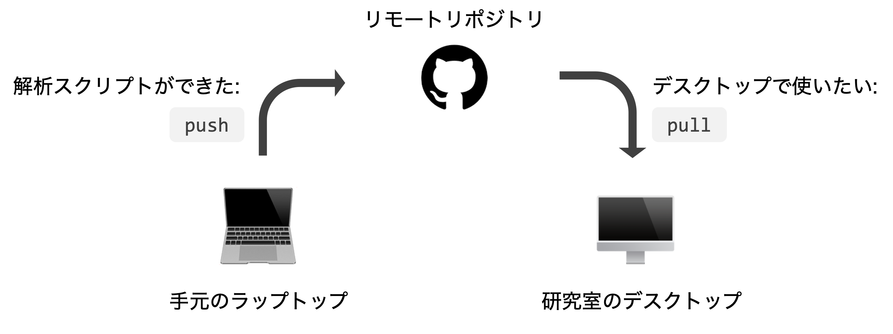
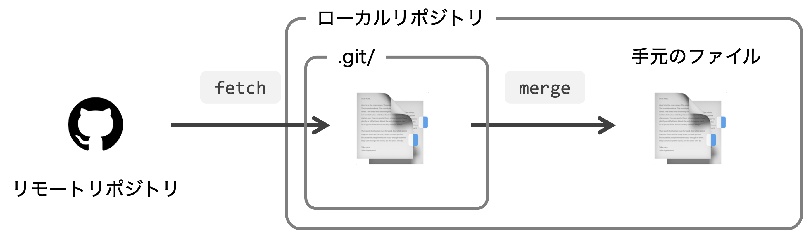
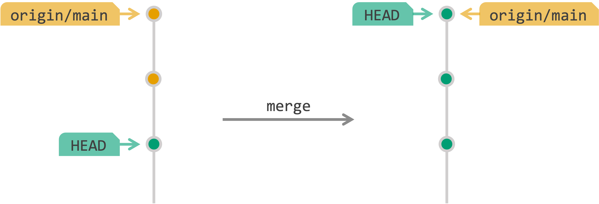
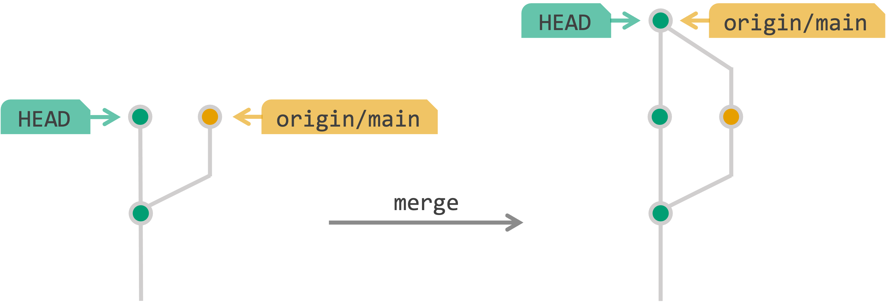

Git 基本操作② — fetch, merge, pull
2023-06-13 牧野研 技術輪読会 git編
今日やること
前回の復習
git statusとgit logに慣れるリモートリポジトリの変更を手元に反映させる
あえて競合を起こしてそれを解決してみる（時間があれば）
前回やったこと
gitをインストールする。
Github
に個人アカウントをつくる。
Gitの初期設定をする:
~/.gitconfigSSHの設定をする:
~/.ssh/
前回の復習: 手元のプロジェクトをGitで管理する
適当なディレクトリを作ってテキストファイル
README.mdを新規作成する:ローカルリポジトリをつくる:
ローカルリポジトリに
README.mdをコミットする。最初は
git statusやgit logで頻繁に確認すると安心。
前回の復習: 手元のプロジェクトをGithubで管理する
GitHubアカウントページの右上の “+” から “New repository” を選択する。
適当なリポジトリ名（基本は手元と同じ）をつけて “Create repository” を押す。
手順が表示されるので基本的にそれに従う:
git remote add origin https://github.com/USER_NAME/new_project.git # リモートリポジトリを紐づける git remote -v # ちゃんと紐づいたか確認 # git branch -M main # ブランチの名前をmainに git push -u origin main # リモートにpush git status“Private” リポジトリの場合、SSHで紐付けしないと下り(
fetch,pull)でもパスワードを聞かれる。リポジトリのページを更新して
README.mdが見えるか確認する。
前回の復習: 既存のリポジトリを手元に落としてくる
GitHub上の適当なリポジトリをひとつ選ぶ。
(e.g., https://github.com/ymat2/practice_git)右の方の <>Code▼ ボタンを押す。
SSHではなくHTTPSを選択し、URLをコピー。
git clone https://github.com/ymat2/practice-git.git中身を眺めてみる:
cloneはどんな時に使う?- 他人の作ったソフトウェアをインストールして使うとき
- 新しいPCで最初に作業を始めるとき
- etc.
準備運動: git status と git log に慣れる
まずは何もしていない状態で git status & git log
git status
# On branch main
# Your branch is up to date with 'origin/main'.
#
# nothing to commit, working tree clean
git log --oneline --graph # 1コミット1行で, グラフィカルに
# * 36d0617 (HEAD -> main, origin/main) Create README.mdorigin- リモートリポジトリのこと。
-
origin/mainはリモートリポジトリのmainブランチ。 HEAD- いま見ているブランチ/commitを指す目印。
- 基本的には「手元の最新のcommit」を表す。
準備運動: git status と git log に慣れる
README.md をさらに編集してみる:
git status すると:
git status
# On branch main
# Your branch is up to date with 'origin/main'.
#
# Changes not staged for commit:
# (use "git add <file>..." to update what will be committed)
# (use "git restore <file>..." to discard changes in working directory)
# modified: README.md
#
# no changes added to commit (use "git add" and/or "git commit -a")準備運動: git status と git log に慣れる
README.md をindexに加える:
ここでも git status :
git status
# On branch main
# Your branch is up to date with 'origin/main'.
#
# Changes to be committed:
# (use "git restore --staged <file>..." to unstage)
# modified: README.md↑ 「間違えて add しちゃった」って時は git restore --staged README.md すればいい。
準備運動: git status と git log に慣れる
README.md の変更をコミットする:
git commit -m "Update README.md"
# [main 0f1a686] Update README.md
# 1 file changed, 2 insertions(+), 1 deletion(-)ここで git status & git log:
git status
# On branch main
# Your branch is ahead of 'origin/main' by 1 commit.
# (use "git push" to publish your local commits)
#
# nothing to commit, working tree clean
git log --oneline --graph
# * 0f1a686 (HEAD -> main) Update README.md <- HEAD(ローカル)はここに移動
# * 36d0617 (origin/main) Create README.md <- origin(リモート)はまだここ準備運動: git status と git log に慣れる
最後に git push:
git log で確認:
git log --oneline --graph
# * 0f1a686 (HEAD -> main, origin/main) Update README.md <- originも追いついた
# * 36d0617 Create README.md「あれ、いまどういう状態だっけ？」
↓
常に git status, git log を確認する癖をつける。
休憩 & 質問タイム
今日やること
前回の復習git statusとgit logに慣れるリモートリポジトリの変更を手元に反映させる
あえて競合を起こしてそれを解決してみる（時間があれば）
リモートリポジトリの変更を手元に反映させる
複数人で同じリポジトリを使う場合や、 個人で複数のマシンを使って開発する場合など、 別のひと/マシンが push した変更を手元に取り寄せるという操作が必要になる。
git fetch + git merge や git pull といったコマンドで、 リモートリポジトリの変更を手元に反映させる。

リモートリポジトリの変更を手元に反映させる
git fetch- リモートリポジトリの変更をローカルリポジトリに取り込む。
-
この時点では
.git/内だけが変更されているため、手元のファイルはそのまま。 git merge- ローカルリポジトリの内容を、手元のファイルに反映する。

git pull は git fetch と git merge を一気にやるコマンド。
実際にやってみる
リモートでの変更を再現するために、Githubページ上で
README.mdを編集する。README.mdをクリック -> 右上のペンマーク 🖊 から編集画面に入る。“This line is edited online.” など適当に編集して、右上の Commit changes を押す。
表示されるウィンドウはとりあえずそのままで Commit changes
変更されていることを確認する。
その変更を
fetchでローカルリポジトリに取り寄せる:
実際にやってみる
mergeで手元のファイルに反映する:
🔰 練習: もう一度リモートで編集して git pull で一気に反映する。
HEAD を origin に追いつかせるマージ
手元のファイルに変更がない場合、fetch してきた origin に追いつくだけでいい。 このようなマージをfast-forward(早送り) マージという。

(このあとFast-Forwardじゃないマージも出てきます。)
ここから先は時間があれば進む
Fast-Forwardじゃないマージ
手元のファイルも変更していた場合、fetch してきた origin に追いつくのではなく、 分岐した両者を再び1つにするマージが必要。
このようなマージをnon-fast forward マージという。

手元でもファイルを変更していたらどうなるの??
「別のファイルの変更」や「同じファイルの別の箇所の変更」である場合、non-fast forward マージで両方の変更を取り入れる。
↓
git fetch + git merge
↓
手元でもファイルを変更していたらどうなるの??
「同じファイルの同じ箇所の変更」である場合、conflict が発生する。
↓
git fetch + git merge
↓
conflictを解消する
conflict が生じたファイル( README.md )を開いてみるとこんな風になっている。
======= を挟んで、
<<<<<<< HEADは手元での変更>>>>>>> refs/remotes/origin/mainはリモートからの変更
を示している。
conflictを解消する
ファイルを編集して conflict を解消する。例えば:
この変更をコミットしてリモートにも反映する:
とにかく使ってみる
🔰 練習1: 先ほどつくった README.md を編集して複数行の内容にする。できたらコミットしてプッシュ。
🔰 練習2: 手元とリモートで異なる行を編集する。git fetch してから git merge してみる。
- 手元: 編集したらコミット
- リモート: 編集したらCommit changes
🔰 練習3: 手元とリモートで同じ行に異なる編集をする。
- まずは手元ではコミットせずに
git fetchしてからgit mergeしてみる。どんなメッセージが出る？
余談: Fast-forward onlyの設定
git merge でリモートとローカルの両方の変更を取り込んだ場合、“merge commit”が自動的につくられる。
余談: Fast-forward onlyの設定
git pull をした時は、「どういう方法でマージするか」を設定していないと自動的なmergeも起こらない。
hint: You have divergent branches and need to specify how to reconcile them.
hint: You can do so by running one of the following commands sometime before
hint: your next pull:
hint:
hint: git config pull.rebase false # merge (the default strategy)
hint: git config pull.rebase true # rebase
hint: git config pull.ff only # fast-forward only
hint:
hint: You can replace "git config" with "git config --global" to set a default
hint: preference for all repositories. You can also pass --rebase, --no-rebase,
hint: or --ff-only on the command line to override the configured default per
hint: invocation.
fatal: Need to specify how to reconcile divergent branches.そこで、「fast-forwardでのmergeのみを試みる。」という設定をしておく。
余談: Fast-forward onlyの設定
- 方法1
-
--ff-onlyオプション付きでgit pullする。 - 方法2
-
~/.gitconfigに--ff-onlyの設定をする。もしくは
余談2: その他の git 便利機能
- 「あのファイルとこのファイル、どこが変わったんだっけ」
-
git diff - 「間違えて〇〇しちゃった、取り消したい」
-
git reset - 「ソースコードは管理したいけど、データや画像は外に出したくないな」
-
.gitignore
- see more
-
git公式リファレンス